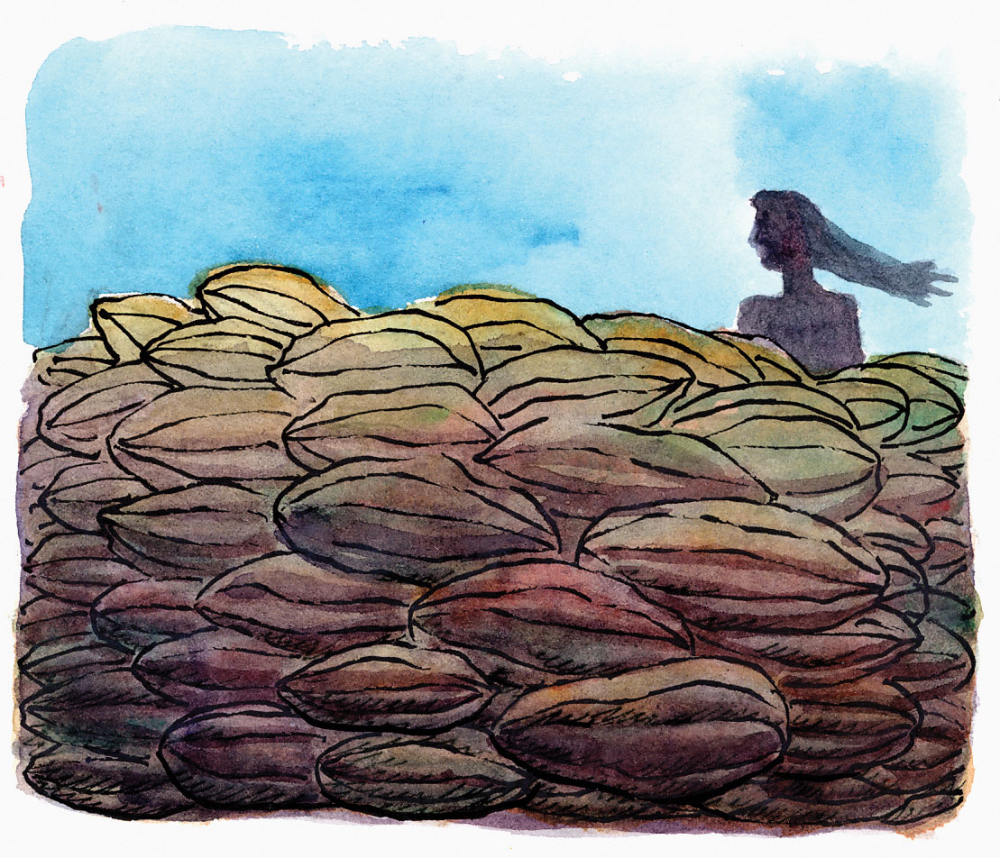
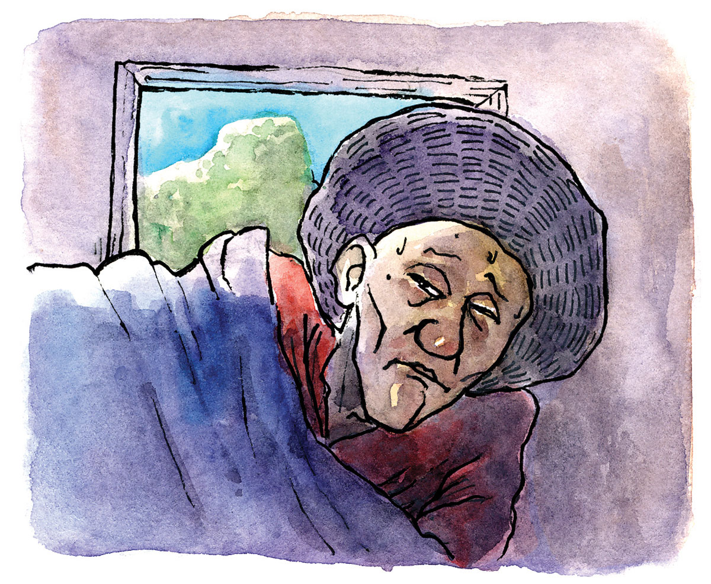

Kasugiran ni Maria Tang-an o Maria Cacao
Sa lungsod sa Tuburan adunay gitawag nga Bukid sa Marmol. Ginganlan kining bukira sa maong pangalan tungod sa pangpang niini nga sama gayud sa marmol ang kahamis.
Nabaniog sa didtong dapit nga adunay nagpuyo sa maong bukid nga usa ka dili ingon nato nga babaye ug ginganlan kini siya’g Maria Tang-an o Maria Cacao kay aduna man kuno siyay halapad nga kakawan kansang mga abot itumod ngadto sa United States of America.
Ingon sa mga sultisulti matag higayon nga motumod si Maria Cacao sa iyang mga giani nga kakaw ngadto sa Amerika, mobul-og pagkalit ang dakong tubig sa sapa sa Langoyon, may uwan man o wala. Usahay gani kuno bisan nagligiting pa ang kainit sa adlaw mobaha gayud og dako ang maong sapa kay moagi man ang dakong barko nga gipanag-iya sa nahisgutang ada. Mao nga wala gayuy taytayan nga molungtad, ma-kahoy man o ma-puthaw ang dapat kay maguba man kini inig-agi na sa barko.
Matod pa usab sa akong inahan nga walay mangahas sa pagpasipala sa bisan unsang mga tanom ug langgam nga makita sa maong pangpang lakip na ang nagkadaiya ug mabulukon nga mga isda nga nagpuyo sa matin-aw nga tubig (nga taga bitiis ang gilawmon) nga nagdagayday ubos sa nag-atbang nga pangpang sa maong Bukid sa Marmol. Sila nagtuo nga ang pagpanghilabot o bisan ang pagtuaw sa pagdayeg sa maong mga talan-awon makamugna og dautang panghitabo sa mohimo niini.
Niasoy si Mama kanako sa nahitabo sa usa ka ginganlan og Sayong nga nitaliwan sa usa ka misteryosong kamatayon.
Usa ka adlaw niana niagi siya uban ang iyang mga higala ubos sa pangpang ug sa dako nga tingog nidayeg sa maanindot nga orkid nga iyang nakita. Gibadlong siya sa iyang mga kauban apan wala siya mopatuo ug gikutlo hinuon ang bulak ug gidala sa ilang balay. Unya gibati niya ang kakapoy sa iyang lawas ug iyang namatngonan nga adunay garas ang iyang bitiis ug iyang gituohan nga nagaras siya pag-ubog sa tubig ubos sa pangpang. Nagkagrabe ang iyang kaluya hangtod nga nabugtoan gayud siya sa iyang gininhawa ug dungan niini nalawos usab ang bulak nga iyang kinutlo sa pangpang. Wala gayuy nakita nga kakulian sa iyang panglawas gawas lang niadtong garas sa iyang bitiis.
Sa diha pa ang haya sa ilang balay , may nanag-ingon nga nakakita sila og awto panahon sa kagabhion sa tugkaran sa namatay. Butang nga ilang gikahibulong kay dili man unta makasulod ang sakyanan sa ilang dapit.
Sa dihang nalubong na ang minatay, nianang pagkagabii ang iyang mga ginikanan gipadamgo niini nga wala siya mamatay ug anaa na siya magpuyo sa nahisgutang bukid ug dili na siya makauli pa. Nidugang siya sa pag-ingon nga ang ilang gihaya usa lamang ka bani sa saging. Nianang pagkabuntag nahibulong ang mga ginikanan ni Sayong kay diha na may usa ka bulsitang tabliya sa ilang banggera.
Matod pa sa akong inahan nga kini si Maria Tang-an o Maria Cacao adunay malumo nga kasingkasing ngadto sa mga tawo nga nanginahanglan. Niingon siya diha kunoy niadto sa pangpang ug nisulti nga mogamit siya og kuwarta ug mga pinggan para sa kasal sa iyang anak ug dihadiha mitunga sa iyang atubangan ang iyang mga gikinahanglan.
Sukad niadto nahimo na kuno siyang dangpanan sa mga nanginahanglan. Matag higayon nga adunay manginahanglan moatubang lang kini sa pangpang ug mosulti kon unsa man ang ilang gikinahanglan. Kutob sa mga nanghulam kinahanglan gayud motuman sa pag-uli sa mga butang nga ilang gihulaman kay aron dili masuko ang engkantada kanila.
Apan diha gayud kunoy mapanamastamason nga wala mouli sa iyang gihulaman. Sukad niadto wala na gayud si Maria Cacao magpahulam pa.
Hangtod karon anaa pa gihapon ang maong Bukid sa Marmol ug ang sapa sa Langoyon. Ang wa lang niya masiguro kon buhi pa ba kaha si Maria Tang-an o Maria Cacao hangtod karong panahona.